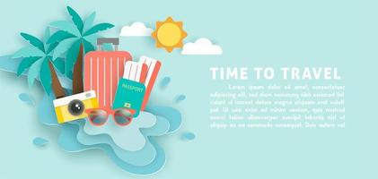

Different Types Of Travel:
- Leisure travel
- Adventure travel
- Cultural travel
- Luxury travel
1. Leisure Travel
Leisure travel refers to travel undertaken for pleasure, rather than for business or other purposes. It includes activities such as sightseeing, cultural experiences, relaxation, and adventure sports. Leisure travel has become increasingly popular in recent years, as more people have the time and resources to explore new destinations and pursue their interests and hobbies. Leisure travel can take many different forms, from short weekend getaways to extended vacations to exotic destinations. It can involve traveling alone, with friends, or with family. Many people also choose to combine leisure travel with other activities, such as attending festivals or concerts, visiting museums or art galleries, or participating in outdoor adventures like hiking, skiing, or surfing. Overall, leisure travel provides an opportunity to escape the stresses of daily life, experience new cultures and environments, and create lasting memories with loved ones. It is an important aspect of many people's lives and has a significant impact on the global tourism industry.
2. Adventure Travel
Adventure travel refers to a type of tourism that involves exploring remote or exotic destinations, engaging in physically and mentally challenging activities, and seeking out unique experiences. It often involves outdoor activities such as hiking, trekking, mountaineering, rock climbing, rafting, kayaking, surfing, and wildlife watching, among others. Adventure travel is popular among those who seek a sense of excitement and adrenaline rush, as well as those who want to step out of their comfort zone and immerse themselves in new cultures and environments. It offers opportunities to explore natural wonders, learn about different cultures, and connect with like-minded individuals. Adventure travel can be enjoyed by people of all ages and fitness levels, and there are many tour operators and travel companies that specialize in organizing adventure trips. These companies provide knowledgeable guides, specialized equipment, and logistical support to ensure the safety and enjoyment of their clients. While adventure travel can be physically demanding and sometimes risky, it can also be highly rewarding and life-changing. It provides a unique opportunity to challenge oneself, learn new skills, and gain a deeper appreciation for the world we live in.
3. Cultural Travel
Cultural travel refers to a type of tourism that focuses on exploring the cultural and historical aspects of a destination. It involves visiting museums, art galleries, historical landmarks, and other cultural attractions, as well as engaging with local people, trying traditional food, and learning about customs and traditions. Cultural travel is popular among those who are interested in history, art, architecture, literature, and other cultural aspects of a destination. It offers opportunities to learn about different cultures, broaden one's perspective, and gain a deeper understanding and appreciation for the world we live in. Cultural travel can be enjoyed by people of all ages and backgrounds, and there are many tour operators and travel companies that specialize in organizing cultural trips. These companies provide knowledgeable guides, specialized itineraries, and logistical support to ensure the best possible cultural experience for their clients. While cultural travel may not be physically demanding, it can be mentally stimulating and enriching. It provides a unique opportunity to learn about different cultures, gain new insights and perspectives, and make lasting connections with people from different parts of the world.
4. Luxury Travel
Luxury travel refers to a type of tourism that focuses on providing the highest level of comfort, service, and amenities to travellers. It involves staying in high-end accommodations, enjoying fine dining experiences, engaging in exclusive activities, and receiving personalized attention from staff. Luxury travel is popular among those who want to indulge in the finer things in life, and who are willing to pay a premium for exceptional service and comfort. It offers opportunities to relax and unwind in a luxurious setting, as well as to experience unique and exclusive activities that are not available to the general public. Luxury travel can be enjoyed by people of all ages and interests, and there are many tour operators and travel companies that specialize in organizing luxury trips. These companies provide personalized itineraries, access to exclusive venues and events, and round-the-clock assistance to ensure the best possible experience for their clients. While luxury travel may not involve physical or cultural exploration, it offers a unique opportunity to experience the world in a way that is comfortable, luxurious, and unforgettable. It provides a chance to escape from the stresses of daily life and indulge in world-class amenities and experiences.
Four Elements Of Travel:
- Funding/Money
- Destinations
- Right time and season
- Transportation
1. Funding/Money
Travel can be expensive, but there are several ways to fund it. Here are some common ways to finance travel:
- Savings: This is the most common way to fund travel. By setting aside money each month, you can accumulate enough to cover your travel expenses. It's important to create a budget and stick to it, so you can save enough for your desired trip.
- Credit cards: Many travel credit cards offer rewards, such as points or miles, that can be used towards travel expenses. By using your credit card for everyday purchases and paying off the balance in full each month, you can accumulate rewards that can significantly reduce your travel costs.
- Travel loans: Some financial institutions offer travel loans, which can be used to cover the cost of travel expenses. These loans can be helpful if you need to travel urgently, but it's important to carefully consider the interest rates and repayment terms before taking out a loan.
- Crowd funding: Crowd funding platforms, such as GoFundMe or Kickstarter, can be used to raise funds for travel. This option is usually reserved for special circumstances, such as medical emergencies or humanitarian missions, and can be difficult to secure for regular travel.
- Work abroad: If you're planning an extended trip, consider working abroad. Many countries offer working holiday visas that allow travellers to work while they explore the country. This can be a great way to finance your travel while gaining valuable work experience and cultural immersion.
2. Destinations
Destinations refer to the places that people travel to for leisure or business purposes. These can be cities, countries, or specific landmarks and attractions. Travel destinations can vary widely, from tropical beaches and exotic locales to historical landmarks and cultural hotspots. Some destinations are popular for their natural beauty, such as national parks and scenic drives, while others are known for their nightlife, shopping, and entertainment. The choice of a destination for travel usually depends on a person's interests, budget, and other factors such as time of year and travel restrictions.
Categories of travel destinations,
- Geographical categories: Destinations can be classified based on their geographic location such as continents, regions, or countries. For example, popular geographical categories include Europe, Asia, Africa, or the Caribbean.
- Cultural categories: Destinations can also be categorized based on their cultural heritage, including art, history, and tradition. Some examples include destinations with significant religious landmarks, ancient ruins, or famous museums.
- Activity-based categories: Travel destinations can also be categorized based on the type of activities that they offer such as beach destinations, adventure destinations, or ski destinations.
- Budget-based categories: Travel destinations can also be categorized based on the type of budget they cater to, such as luxury destinations, mid-range destinations, or budget-friendly destinations.
- Ecological categories: Destinations can also be categorized based on their ecological features, such as eco-tourism destinations or wildlife conservation areas.
3. Right Time And Season
The best season for traveling can vary depending on your destination and personal preferences. Here are some general recommendations for each season:
- Summer: Summer season is a popular time for travel in many parts of the world, as it is typically associated with warm weather, longer days, and school holidays. In the Northern Hemisphere, summer generally refers to the months of June, July, and August, while in the Southern Hemisphere, it is December, January, and February. Some popular destinations for summer travel include beaches and coastal areas, national parks, cities with outdoor festivals and events, and areas with cooler climates. However, it's important to note that summer travel can also come with higher costs and crowds, as many people have the same idea to take a summer vacation. It's a good idea to plan ahead and book accommodations and activities in advance to avoid disappointment or higher prices. It's also important to research local customs, weather, and safety considerations before traveling to any destination.
- Fall: The fall season, also known as autumn, is one of the four seasons that occur in temperate regions. It typically begins in September and ends in November in the Northern Hemisphere, and from March to May in the Southern Hemisphere. During the fall season, temperatures begin to cool down from the warm summer months, and the days become shorter. The leaves on trees change color, turning vibrant shades of red, orange, and yellow, before falling to the ground. This process is called leaf peeping, and it is a popular activity for people to enjoy the beautiful scenery. Fall is also the time for many seasonal activities such as apple picking, pumpkin carving, and hayrides. It is a popular time for outdoor activities such as hiking, camping, and bonfires. The fall season also includes several holidays such as Halloween and Thanksgiving. In many cultures, the fall season is associated with harvest and abundance, as it is the time when crops are harvested and stored for the winter months. Overall, the fall season is a beautiful and transitional time of the year that is enjoyed by many.
- WinterThe best time to travel during winter depends on your personal preferences and the destinations you plan to visit. If you enjoy winter sports such as skiing or snowboarding, then you may want to travel to mountainous regions during the winter season. If you prefer warmer weather, you may want to consider traveling to destinations that have milder winter climates, such as the southern hemisphere or tropical regions .It's important to research the weather and climate conditions of your desired destination before planning your trip. You should also consider the peak travel season for that location, as winter is often a popular time for travel due to holidays and school breaks. Overall, the winter season can be a great time to travel as it offers a unique range of activities and experiences that may not be available during other seasons. Just make sure to pack accordingly for the climate and weather conditions.
- Spring: Spring can be a great time to travel, as the weather is generally mild and pleasant in many parts of the world. However, the ideal spring weather for travel depends on your personal preferences and the destinations you plan to visit. In general, spring weather tends to be comfortable in many places, with temperatures typically ranging from the mid-50s to mid-70s Fahrenheit (around 12-24 degrees Celsius) in many parts of the Northern Hemisphere. This can be a great time to visit places that might be too hot or too cold during other times of the year. If you enjoy outdoor activities, you might want to consider visiting areas with spring blooms, such as the cherry blossoms in Japan or the tulip fields in the Netherlands. You could also plan a trip to a beach destination, such as the Caribbean or Hawaii, where the weather is warm year-round. Overall, the key to choosing the right spring destination is to consider your interests and preferred activities, and to research the weather patterns of the places you are considering. This will help you choose a location that is best suited to your needs and preferences. In summary, the best season for travel depends on your destination and personal preferences. Consider factors such as weather, crowds, and prices when deciding when to plan your next trip.
4. Transportation
Transportation is an essential aspect of travel, both for local and foreign destinations. The mode of transportation that you choose can greatly affect your travel experience. Here are some common modes of transportation for local and foreign travel:
Local Travel:
- Public Transportation: Buses, subways, trams, and trains are common modes of public transportation for local travel. They are usually affordable and convenient, and can take you to various parts of a city or town.
- Taxis and Ride-Hailing Services: Taxis and ride-hailing services like Uber and Lyft are also popular options for local travel. They can be more expensive than public transportation, but they offer greater convenience and flexibility.
- Rental Cars: Rental cars are a good option if you want to explore a local area on your own schedule. They can be more expensive than public transportation, but they offer greater freedom and flexibility.
Foreign Travel:
- Air Travel: Air travel is the most common mode of transportation for foreign travel. It is fast and convenient, but can also be expensive.
- Trains: Trains are also a popular mode of transportation for foreign travel, especially in Europe and Asia. They offer scenic views and are usually affordable.
- Buses: Buses are a budget-friendly option for foreign travel. They can be slower than trains or planes, but they can also be more comfortable and offer scenic routes.
- Rental Cars: Rental cars are also an option for foreign travel, but they can be more expensive and may require additional permits and paperwork.
In summary, the best season for travel depends on your destination and personal preferences. Consider factors such as weather, crowds, and prices when deciding when to plan your next trip.